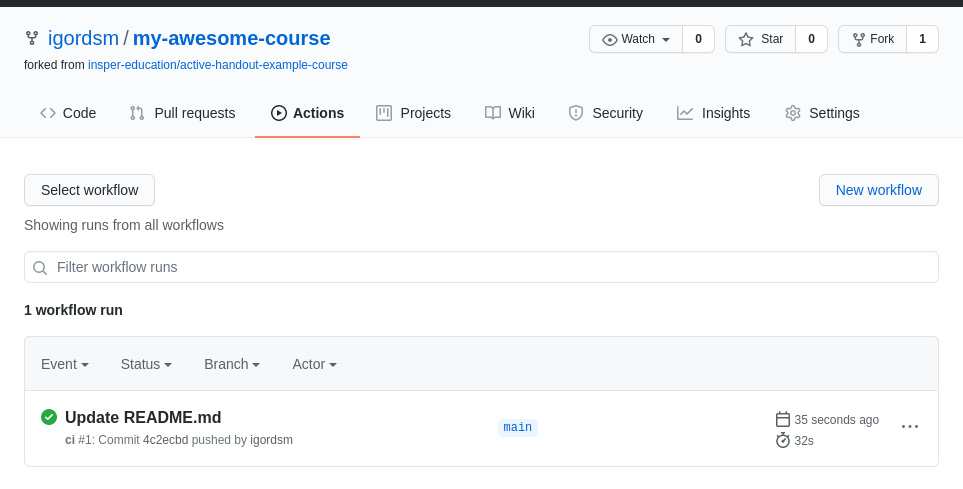

Preparatory tasks
This set of preparatory tasks was created to avoid spending precious synchronous time with tasks like creating accounts or configuring software. You should need about 20 minutes to complete all tasks. We do not assume any previous knowledge on the technologies involved, so it is possible to complete the material in much less time.
Task 1 - visit some resources
The first step is to become familiar with the type of course materials that can be created using Active Handout, the tool we will use in this workshop. We selected some interesting examples of handouts created using this tool:
- High Performance Computing
Question
Browse the resources above. Are there feature(s) you would like to incorporate in your pedagogical practice? List them below.
Details
Your answer will be saved locally in your browser. Use these questions as a way to create a digital notebook.
Progress
Continue
Task 2 - creating a Github account
GitHub is a tool to host software repositories and documentation with a focus on collaboration. In this Workshop it will be used to host our course materials.
- Multiple instructors can easily collaborate to write and update material;
- Course materials are available as a webpages, but can also be entirely downloaded to students' and instructors' PCs.
- Students can create private copies of the course repository to store their own solutions and homework;
Tip
The main advantage of basing a course on Active Handout is the ability to incorporate new resources into your courses. When a new release is made all users can choose to update their version of Active Handout and use the new features or stay with their tried and tested version.
If you already have an account, skip to task 3
Task
Visit Github and create and account. The website will guide you during the signup process. Choose a username that is unique and professional.
Question
Write your github username below.
Details
Your username will be part of the URL of your newly created materials. Store it with care!
Progress
Continue
Task 3 - create your first course repository
We will base our workshop in Active Handout's Example Course. It contains a pre-configured basis for new course materials and we will base all workshop activities on this repository.
Task
Visit Active Handout's Example Course. Browse for a bit and then visit its GitHub repository page.
Video
Question
Now we will create a new repository for your course. Choose a name and write it below. Only Numbers, Letters and dashes - can be used.
Details
The URL of your course will be https://username.github.io/coursename.
A key concept in Github is forking a repository. When you fork a repository you create a relationship between the original (Example Course) and the newly created repository, which we refer to as your fork. This has many advantages:
- Students can also create forks of the course where they save their homework and activities
- Whenever the original repository is updated, your fork can opt to incorporate the new changes. This can add new features to your course materials.
- History is preserved when forking, so your modifications will never be overwritten by updates.
Question
When we refer to your fork it means:
- My course's repository, which I will create in this section.
- Active Handout's Example Course repository
Task
Create a fork of Active Handout's Example Course repository. Follow the video below. If prompted where to create the fork, choose your own username.
Video
Tip
By default, your fork will have the same name as the original (active-handout-example-course).
Task
Now let's rename the newly created repository. Follow the instructions below. Use the name you chose in a previous question.
Video
Question
Write the repository url of your fork below. You can copy it from your browser's address bar.
Details
This address will be used to find your repository online so others can contribute. Think of this URL as the place where other people will go if they want to download a copy of the entire course.
Now we will configure your fork to be published as a website. This will be done in two parts:
Task
First, we check if Pages are enabled in our repository settings. It is the second last option in the Settings tab. Make sure the values are the same as in the video.
Video
Question
In the last step of the previous task Github showed the address our course materials will be published. Write it down here.
Details
This changes according to your username and repository name.
Task
Then we will configure Github to automatically publish our course to the web everytime we make a modification. We bundle a Github workflow with the example course, so we just need to active it in the repository.
Video
Now everything is setup!
Progress
Continue
Task 4 - your first modification
Our repository is now good to go. So let's make a modification and see our course materials being built.
Task
We will make a very simple modification and edit the README.md file. This is an important file, as it is presented when people visit your repository. You can follow the video instructions on how to modify files directly online using Github.
Video
After every modification a Action is triggered and our website is updated.
Task
Visit the Actions tab. It should show something similar to the image below.

Visit the website URL you noted before to see your materials online.
Progress
Continue
Task 5 - bring your own material
During the workshop we will customize the provided example course. To better take advantage of the workshop, you can bring your own course materials and use them in the workshop activities.
Task
Select some of your existing course materials and bring them with you. Some suggestions are:
- A powerpoint presentation
- A lab handout in Word
We will provide example materials for those who do not bring their own material.